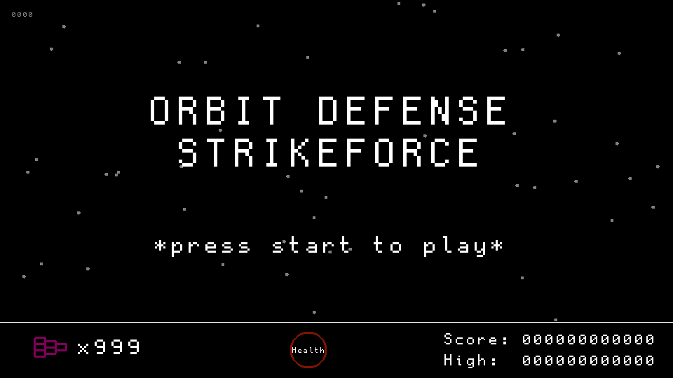
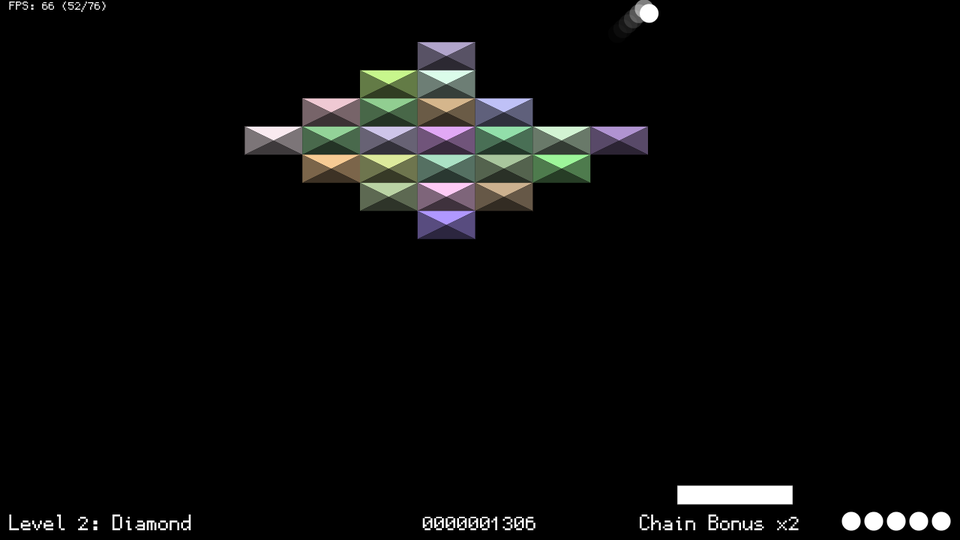
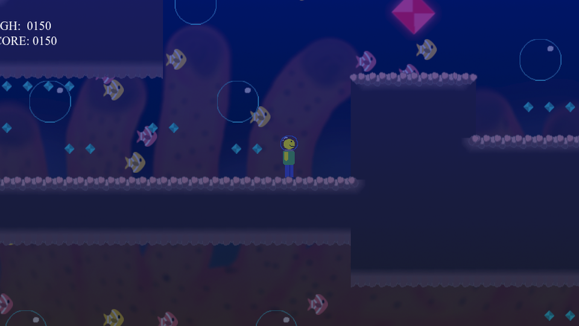

Games
Building strange things for strange hardware.
I've developed games across various platforms and languages, from the PlayStation 1's motherboard to the browser.
All Games

Orbit Defense Strikeforce
Common Lisp 📗 Complete
Space shooter in Common Lisp. Submission for the Lisp Game Jam 2018.

Super BrickBreak
JavaScript 📗 Complete
Classic Breakout clone with fast-paced gameplay. Play directly in the browser.

Underwater Adventures
Construct 2 📗 Complete
Platformer made in Construct 2 in 2017. 100-event limit — all used up.